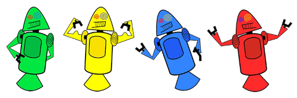

Historia do mascote android
Provavelmente voce sabe que o sistema android, mantido pelo google é um dos mais utilizados para dispositivos moveis em todo mundo . mas talvez voce nao saiba que o seu simpaticp mascoote tem um nome e uma historia muito curiosa? Pois acompanhe esse arquivo para aprender muita coisa sobre esse robozinho
A primeira versão
A primeira tentativa de criar um mascote surgiu em 2007 e veio de um desenvolvedor chamado dan moli. ele conta que abriu o linkscape (software livre para vetorização de imagens)e criou sua propia versao de robo. o objetivo era apenas personalizar o sistema apenas para sua equipe, nao existia nehuma solicitação da empresa para a criação de um mascote

A primeira versao bizaraa ate foi batizada em homenagem ao seu criador: seriam os bugdroid
Surge um novo mascote
a ideia de ter um mascote foi amdurecedo e a missao foi passada para um proficional da area, a ilustradora russa Irina Blok, também funcionária do Google, que ficou com a missão de representar o pequeno robô de uma maneira mais agradável.

A ideia principal era representar tudo graficamente com poucos traços e de forms mais chapada . o desnho tambemm deveria gerar identificaçõa rapida com quem o olha. sugiu entao o bugdroid, o novo mascote do android

A principal inspiração para os traços de novo bugdroid veio daqueles bonequinhos que illustraram portas de banheiros para indicar o generro de cada porta , conta a lenda que a artista estava criando em sua mesa no escritorio do google e olhou para o lado dos banheiros e identificação foi imediata: simples, limpo, objetivo.